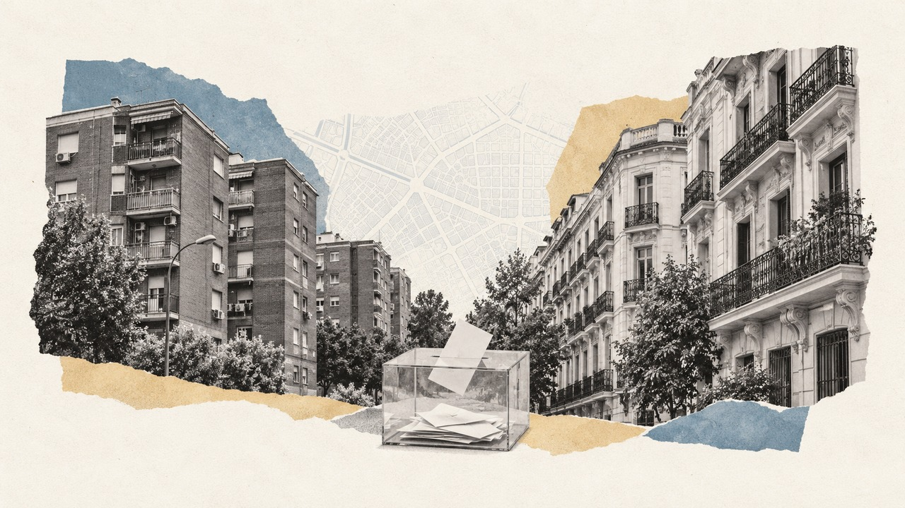

Inicio › Municipios › Madrid › Madrid
Barrio de Madrid · distrito Chamberí · Generales 2004-2023
Elecciones en Trafalgar
Cómo vota este barrio de Madrid, quién vive en él y en qué se separa del resto de la ciudad
Por Nacho G. del Álamo · Actualizado el

DatoEn Trafalgar, en el distrito de Chamberí, el PP fue la fuerza más votada en las elecciones generales del 23 de julio de 2023, con el 46,5 % del voto válido, por delante del PSOE (23,9 %). Votó el 77,6 % de sus 18.237 electores, 4,2 puntos más que el conjunto de Madrid (73,4 %): es el 48.º de los 127 barrios de la ciudad con más participación.
DatoDonde más se separa Trafalgar del resto de Madrid es en el voto del PP: 46,5 %, frente al 41,8 % de la ciudad, 4,7 puntos más.
DatoViven en Trafalgar 24.720 personas (padrón de 2023), con una edad media de 44,5 años (43,9 en Madrid). El 17,4 % tiene nacionalidad extranjera, frente al 17,4 % de la ciudad. Según el censo de 2021, el 66,0 % de los adultos tiene estudios superiores (45,0 % en la ciudad) y la tasa de paro era del 9,0 % (12,5 %).
DatoLa renta neta media por unidad de consumo es de 37.259 € al año (28.749 € en Madrid): el 35.º barrio con más renta de los 127 de la ciudad. El 12,7 % de la población vive por debajo del umbral de pobreza relativa (menos del 60 % de la renta mediana).
Ver Trafalgar calle a calle en el mapa de Madrid
Sección a sección
DatoTrafalgar tiene 23 secciones censales, la unidad más pequeña con resultados electorales (entre 500 y 2.500 electores cada una). En 2023 ganó el PP, en 23.
PP
DatoDentro del barrio también hay distancia: en la sección que más votó (distrito 7, sección 52) participó el 81,7 %, y en la que menos (distrito 7, sección 65), el 72,6 %. La primera tiene una renta de 35.229 € por unidad de consumo; la segunda, de 30.798 €.
Las 23 secciones de Trafalgar, una a una
| Sección | Censo | Participación | Más votado | Renta |
|---|---|---|---|---|
| Distrito 7, sección 50 | 569 | 78,2 % | ■ PP (47,5 %) | 38.456 € |
| Distrito 7, sección 51 | 545 | 76,1 % | ■ PP (45,5 %) | 32.588 € |
| Distrito 7, sección 52 | 519 | 81,7 % | ■ PP (43,2 %) | 35.229 € |
| Distrito 7, sección 53 | 1.016 | 75,6 % | ■ PP (40,8 %) | 33.375 € |
| Distrito 7, sección 55 | 513 | 80,1 % | ■ PP (46,8 %) | 39.017 € |
| Distrito 7, sección 56 | 564 | 75,7 % | ■ PP (40,7 %) | 33.505 € |
| Distrito 7, sección 57 | 1.056 | 75,9 % | ■ PP (47,1 %) | 39.347 € |
| Distrito 7, sección 58 | 847 | 76,4 % | ■ PP (40,6 %) | 36.572 € |
| Distrito 7, sección 59 | 604 | 74,3 % | ■ PP (46,8 %) | 37.902 € |
| Distrito 7, sección 60 | 640 | 79,4 % | ■ PP (45,2 %) | 37.382 € |
| Distrito 7, sección 61 | 931 | 78,5 % | ■ PP (44,8 %) | 35.193 € |
| Distrito 7, sección 62 | 788 | 79,1 % | ■ PP (41,1 %) | 32.492 € |
| Distrito 7, sección 63 | 979 | 80,9 % | ■ PP (47,3 %) | 39.719 € |
| Distrito 7, sección 64 | 869 | 77,3 % | ■ PP (49,2 %) | 39.965 € |
| Distrito 7, sección 65 | 933 | 72,6 % | ■ PP (45,9 %) | 30.798 € |
| Distrito 7, sección 66 | 775 | 76,4 % | ■ PP (44,6 %) | 34.297 € |
| Distrito 7, sección 67 | 806 | 74,6 % | ■ PP (46,2 %) | 36.826 € |
| Distrito 7, sección 68 | 778 | 79,2 % | ■ PP (48,8 %) | 38.990 € |
| Distrito 7, sección 69 | 737 | 80,3 % | ■ PP (44,3 %) | 35.472 € |
| Distrito 7, sección 70 | 891 | 75,8 % | ■ PP (44,5 %) | 36.574 € |
| Distrito 7, sección 71 | 779 | 80,7 % | ■ PP (52,2 %) | 41.434 € |
| Distrito 7, sección 72 | 1.091 | 79,4 % | ■ PP (52,8 %) | 44.528 € |
| Distrito 7, sección 73 | 1.007 | 78,5 % | ■ PP (55,9 %) | 43.050 € |
Resultado de las generales de 2023
DatoVoto por partido sobre voto válido (candidaturas más blancos) en las 23 secciones de Trafalgar. La línea discontinua marca el resultado del conjunto de Madrid.
| Partido | Voto | Votos | Madrid |
|---|---|---|---|
| PP | 46,5 % | 6.536 | 41,8 % |
| PSOE | 23,9 % | 3.357 | 27,3 % |
| Sumar / Podemos / IU | 15,9 % | 2.243 | 16,5 % |
| Vox | 11,7 % | 1.641 | 12,4 % |
| Otros | 1,2 % | 162 | 1,2 % |
De 2004 a 2023
DatoDesde 2004, el barrio ha cambiado de partido más votado 2 veces: el PP ganó en 7, el PSOE ganó en 1 de 8 elecciones. La participación ha pasado del 80,5 % en 2004 al 77,6 % en 2023.
| Elección | Participación | Más votado | PP | PSOE | Vox | Sumar / Podemos / IU | Ciudadanos | UPyD |
|---|---|---|---|---|---|---|---|---|
| 2004 | 80,5 % | PP | 56,3 % | 33,3 % | — | 6,2 % | — | — |
| 2008 | 80,8 % | PP | 55,1 % | 32,8 % | — | 4,9 % | 0,2 % | 4,8 % |
| 2011 | 75,5 % | PP | 54,7 % | 22,1 % | — | 7,4 % | — | 9,6 % |
| 2015 | 78,1 % | PP | 38,7 % | 12,6 % | 0,9 % | 25,6 % | 19,4 % | 1,3 % |
| 2016 | 76,6 % | PP | 43,3 % | 15,3 % | 0,7 % | 19,9 % | 18,4 % | 0,5 % |
| abr. 2019 | 81,2 % | PSOE | 23,7 % | 24,1 % | 12,5 % | 15,7 % | 21,2 % | — |
| nov. 2019 | 77,1 % | PP | 31,1 % | 22,7 % | 14,7 % | 19,9 % | 9,6 % | — |
| 2023 | 77,6 % | PP | 46,5 % | 23,9 % | 11,7 % | 15,9 % | — | — |
Con las secciones censales de 2023: los resultados de cada elección son los de las secciones que ya existían con el mismo código. Las familias agrupan a cada partido con sus antecesores y coaliciones (Podemos, IU y Sumar; Junts y CiU).
Quién vive en el barrio
| Trafalgar | Madrid | |
|---|---|---|
| Habitantes (2023) | 24.720 | 3.362.335 |
| Edad media | 44,5 | 43,9 |
| Menores de 18 años | 10,9 % | 14,8 % |
| 65 años o más | 21,2 % | 20,2 % |
| Nacionalidad extranjera | 17,4 % | 17,4 % |
| Nacidos fuera de España (2021) | 21,8 % | 23,7 % |
| Con estudios superiores (2021) | 66,0 % | 45,0 % |
| Tasa de paro (2021) | 9,0 % | 12,5 % |
| Renta neta por unidad de consumo | 37.259 € | 28.749 € |
| Renta neta por habitante | 26.431 € | 19.428 € |
| Bajo el umbral de pobreza relativa | 12,7 % | 18,4 % |
Medias de las secciones del barrio ponderadas por su población. Padrón y Atlas de Distribución de Renta de los Hogares del INE (2023); estudios, paro y lugar de nacimiento, del censo de población de 2021. La relación entre estas cifras y el voto es entre barrios, no entre personas.
Otros barrios del distrito de Chamberí
- Ríos Rosas: el PP, participación del 79,4 %
- Arapiles: el PP, participación del 78,4 %
- Gaztambide: el PP, participación del 78,9 %
- Vallehermoso: el PP, participación del 82,0 %
- Almagro: el PP, participación del 80,9 %
Más datos
- Todos los barrios de Madrid
- Elecciones en Madrid, desde 1977
- Participación electoral por barrio en toda España
- Voto y renta por barrios en toda España
Método y fuentes
- Qué es el barrio
- Los límites de barrios y distritos son los de OpenStreetMap (© colaboradores de OpenStreetMap, licencia ODbL), que en la mayoría de ciudades copian la división oficial del ayuntamiento. Cada sección censal del INE se asigna al barrio con el que comparte más superficie; las que caen menos de la mitad dentro de un barrio no se asignan. Como las secciones no siempre siguen los límites de los barrios, alguna manzana del borde puede quedar en el barrio vecino.
- Datos
- Resultados oficiales por mesa del Ministerio del Interior (Infoelectoral) agregados por sección censal, sin el voto de los residentes en el extranjero (CERA). Renta y población: Atlas de Distribución de Renta de los Hogares y padrón del INE (2023); estudios, paro y lugar de nacimiento: censo de población de 2021.
- Cómo se calcula
- Porcentajes sobre voto válido (candidaturas más votos en blanco), sumando votos de las secciones, no promediando porcentajes. Participación: votantes entre censo. Agrupación de partidos y límites: metodología del mapa.
- Datos abiertos
- Las cifras salen de las descargas del mapa (CSV, licencia CC BY 4.0); la relación entre secciones y barrios está en data/barrios/secciones_barrio.csv.
- Autoría y revisión
- Nacho G. del Álamo. Publicado el 22 de octubre de 2026; actualizado el 22 de octubre de 2026. Política editorial · Correcciones